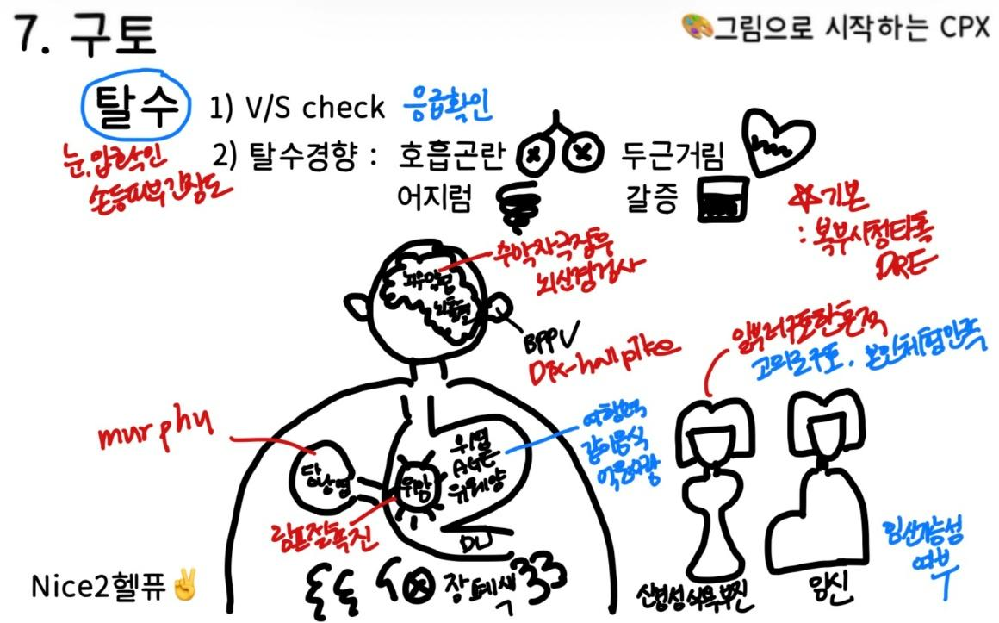

7. 구토
단, 폐색이 있다면 압통은 무조건, 교액까지 있으면 반동압통도 있다고 기억
+ 그 외에는 탈수 확인해서 입원 & 수액 IV or just 경구 수액 요법 선택
원인 | ||||
소화기 | 위장관 폐색, 위식도 역류, 소화성 궤양(위염), 위암 감염: 식중독, 급성 위장염, 급성 담낭염 (소아 - 날문 협착증, 장중첩증) | |||
뇌신경 | 양성돌발 체위 현기증, 뇌수막염, 뇌출혈 정신: 신경성 폭식증, 신경성 식욕부전증 | |||
기타 | 요독증, 임신, 심인성 구토 | |||
평가목표 1) 구토의 정도와 동반된 체액이나 산/염기 및 전해질 장애를 확인하고, 응급조치를 할 수 있는가 2) 원인에 따른 치료계획을 설명할 수 있는가 | ||||
구체적인 성과 | ||||
병력 청취
| 위배출 지연/소화기 질환 구별 | 위배출 지연: 대량/소화안된지 오래된 음식/악취 등의 양상 소화기 질환: 동반되는 소화기 Sx 존재 (A/N/V/C/D/속쓰림/소화불량 등) + 담즙(초록색), 피(커피색, 선홍색), 위액(투명, 노란색) 등의 양상도 체크 | ||
| 소화기계 이외의 원인 감별 | 신경계(분출구토), 전정기관(멀미), 기타(임신, 요독증) | ||
| 구토와 동반된 체액부족이나 산/염기 및 전해질 장애 평가 | 탈수 정도: 두근거림/어지러움/호흡곤란/소변량감소 전해질/산염기: 전신 무력감, 근육 경련, 감각 이상 -> 잦은 구토로 인한 산/전해질 소실 의심 | ||
신체 진찰 | 응급 처치가 필요한 체액감소와 산/염기 및 전해질 장애를 평가하기 위한 신체진찰 | V/S 확인: 혈압 저하(저혈압), 맥박 상승(빈맥) 혀와 구강 점막의 건조도(Dry tongue/mucosa) 및 피부 탄력성(Skin turgor) 저하 의식 상태: 전해질 불균형이나 뇌 관류 저하로 인한 의식 혼탁 여부 확인 + 증상에 따라 신경학적 검사가 필요: 사지 근력 저하, 감각 이상 | ||
| 소화기계 폐색을 감별하기 위한 신체진찰 | 복부 팽만, 이전 수술 흉터(장유착/장폐색 단서) 장음 소실 혹은 금속성 장음, Td/rTd(복막 자극 징후) + Succussion splash: 상복부 흔들었을 때 출렁거리는 소리 | ||
| 소화기계 이외의 원인을 감별하기 위한 신체진찰 | 신경계: 수막자극징후, 뇌신경 검사 전정기관: Nystagmus, Dix-Hallpike maneuver 정신: 치아부식, 손의 상처 | ||
진단 및 치료 | 산/염기 및 전해질 불균형 + 체액 부족 | 혈액검사 (ABGA, 전해질 수치, BUN/Cr) | 수액요법 금식 및 안정 | |
| 원인 질환 감별 | 감염 | 대변배양검사 | 충분한 휴식 식사 전 손씻기 + 음식가려먹기 |
|
| 소화기 질환 | 위내시경, 요소날숨검사 | 위산 줄여 염증 줄이는 약물 |
|
| 소화기 폐색 + 암 | 복부 영상 검사 (xray, CT) | 비위관 - 수술 (종양) 병기에 따른 치료 |
환자교육 | 체액, 산/염기 및 전해질 교정의 필요성 | 수분 부족은 탈수와 어지럼증, 심하면 실신을 유발 전해질 수치가 불균형해지면 근육 경련이나 부정맥 등의 합병증 가능성 | ||
| 구토에 따른 합병증 예방법 | 구토 후 탈수 증상 시 입원 후 수액 치료 두통, 팔다리 힘빠짐, 의식 떨어지는 등 신경 Sx 시 내원 | ||
| 소화기 질환 | 당분간은 금식 증상이 나아지면 미음이나 죽처럼 부드러운 음식부터 시작 기름지고 자극적인 음식 피하기 식후 눕지 않기, 잘 때 머리부분을 높여서 역류증상이 발생하지 않도록 교육 | ||
질환 | 질환 설명 | 병력청취 | 신체진찰 | 검사 | 치료 | |
감염 | 식중독 급성 위장염 1+2 | 음식 섭취로 인해 바이러스나 세균이 위장을 자극 | 발열, 복통, 설사, 탈수 상한 음식물 섭취, 같은 먹은 사람도 증상 호소 | 복부 압통 장음 항진 | CBC 전해질검사 대변배양검사 | 수액 공급 (세균) 경험적 항생제 |
| 급성 담낭염 | 담낭이 막혀 염증이 발생 | 복통, 발열, 소화불량, 식후 악화 | 복통 Murphy's sign | 복부 CT, 복부 초음파 LFT | 담낭절제술 항생제, 배액 |
소화 | 소화성 궤양/위염 1/1 | 위산에 의해 점막이 헐어 상처/위 점막에 염증 | 속쓰림, 복통, 신물올라옴 GU) 흑색변, 식후 악화 DU) 식전 악화 | 복통 | 위내시경 요소날숨검사 신속요소분해효소검사 | PPI 제산제 위점막보호제 |
| 위암 0+1 | 위에 생긴 종양, 음식 통로를 막거나 자극 | 빈혈, 체중감소, 흑색변 | 복통 림프절비대 | 위내시경 복부 CT | 위절제술 내시경 점막하절제술
|
| 장폐색증 4 | 장이 막혀, 가스와 음식물이 통과하지 못하고 정체된 상태 | 식후 복통, 복부 수술력, 구토(대량, 소화X 음식물) +) 약물로 인한 유문부 폐쇄 +) DU로 인한 유문부 폐쇄 | 장음 항진 없음? | 복부 X-ray | 비위관 삽입 전해질 교정 수술 |
신경 | 양성돌발 체위현기증 | 귀 안의 균형잡는 작은 돌이 벗어나서 움직임 | 어지럼증, 메스꺼움 | Dix-Hallpike test | Dix-Hallpike test | Epley maneuver |
| 뇌수막염 | 뇌막에 염증이 생겨 뇌압 상승 | 두통, 발열, 경부강직 | 수막자극징후 | 뇌척수액천자(IICP주의) 뇌 CT | 항생제/항바이러스제, 스테로이드 |
| 뇌출혈 | 뇌에 피가 고여 압력이 올라감 | 극심한 두통, 의식저하, 분출구토, 고혈압, CVD, 두부외상 과거력 | 수막자극징후, 국소 신경학적 이상 | 뇌 CT 뇌척수액천자 | HTN 관리 개두술 및 혈종제거술 |
정신 | 신경성 폭식증/식욕부진증 | 심리적 문제로 과식/거식이 생기고 그로 인해 위가 자극받음 | 젊은 여성 고의성 체중/체형에 대한 강박
| 손에 상처 치아 손상 |
| 인지행동치료 SSRI 영양 보충 |
기타 | 임신 0+1 |
| 가임기 여성 최근 생리 X | 골반 진찰 | 소변 hCG 골반초음파 | 산전 진찰 안내 |
| 요독증 | 신기능 저하로 노폐물이 혈액에 쌓여 뇌와 위장관 자극 | 피로, 거품뇨, 핍뇨, 만성 신부전 병력, 가려움증
|
| serum BUN/Cr 소변검사 신장초음파 | 신대체요법 신장 이식 |
소아 | 날문협착증 | 위에서 장으로 내려가는 길이 좁아져 폐색 | 생후 2~3주 토하고 자꾸 먹으려함 분출성/담즙 X |
| 복부초음파 | 전해질교정 날문근절개술 |
| 장중첩증 | 장이 안으로 말려들어가 막힘 | 생후 3~12개월 심한 복통 딸기잼 같은 변 | 복통 복부종괴 | 복부초음파 | 공기정복술 + 응급수술 |
O | 언제 cf. 장폐색, 식중독/위장관염은 급성(어제, 몇시간 전) // 몇주 됐으면 위장관염/궤양/종양 당시 어떤 상황 r/o 식중독(상한음식), 담낭염(기름진음식), 뇌출혈(외상) 등등.. | |||||||
L |
| |||||||
D | 자주 / 몇번 | |||||||
Co | 처음보다 심해지나요? | |||||||
Ex | 이전 경험 – 치료 | |||||||
C |
양상) 양 / 색(담즙, 피) / 덩어리 (음식물) / 냄새 맛(신맛 - 상부, 쓴맛 - 하부, 대변같은 - 장폐색) / 분출성(r/o IICP) 정도) 일상생활에 지장 (-> 공감PPI) Cf) 우측에 감별하는거 너무 집착해서 알필요 없을 듯 | |||||||
A | 전신) 발열/오한/체중변화/피로 r/o 암 응급/탈수) 두근거림/어지러움/호흡곤란/소변량감소/근육경련 소화) 1 N/V/A /복통/명치통/속쓰림/소화불량 2 변비/설사, 혈변/흑색변/지방변 r/o 식중독(설사), 심한복통(장폐색) 신경) 어지럼 /두통/팔다리힘빠짐/ 목뻣뻣 r/o 뇌출혈, 뇌수막염 어지럼/이명 r/o BPPV 정신) 고의적 구토 / PPI + 스스로의 체형 r/o 신경성 식욕부진증 or 폭식증 비뇨) 거품뇨? r/o 요독증 | |||||||
F | [식중독] - 음식 -> 같이 먹은 사람은? - 여행력: 여행가서 안 먹던 음식 – 같이 먹은 사람은? - 과식/과음 | |||||||
E | 마지막 건강검진? (위/대장내시경) 간염예방접종 | |||||||
외 | 수술받은 적이 있나요? (특히 복부) r/o 급성 장폐색 머리 다친 적 있나요? | |||||||
과 | 현재 앓고 계신 질환이 있나요? 기본 : 고혈압/당뇨/고지혈증/결핵/간/신 콩팥병 r/o 요독증 | |||||||
약 | 복용중인 약물? NSAID 진통제 > 얼마나 먹었는지 r/o 소화성 궤양 항구토제 | |||||||
사 | 기본 : 음주/흡연/커피/직업/스트레스 [식습관] 평소 식사 규칙적? 기름지고 자극적인 음식 좋아하나요? 식후에 곧바로 눕나요? [운동] 운동 규칙적으로 하시나요? 일주일에 몇번 정도 하세요? | |||||||
가 | 소화) 소화기질환 / 암 신경) 만성질환 / 뇌졸중 | |||||||
여 | LMP, 주기(규칙적), 임신 가능성 | |||||||
PEx | 동의 구하기 손 씻기 | |||||||
| 기본 | V/S 확인 (혈압, 맥박, 호흡수, 체온) 1 눈: 빈혈, 황달 2 입: 탈수 + 치아부식(손가락으로 구토를 유도한 흔적?) r/o 신경성 식욕부진 3 목: 경부 림프절 r/o 암 4 사지 : 피부 긴장도, 손 상처 r/o 신경성 식욕부진 다리부종 | ||||||
| 복부 | ① 복부: 시-청 (1군데 당 3-5초)-타 (먼 곳부터)-촉(먼 곳부터) 3 간 진찰: 타진 (간, 복수) – 촉진 (간, murphy) | ||||||
| (신경계 의심시) 신경 | [뇌신경] 1 동공반사 2 안구운동검사: 제 코 보세요+턱 잡고 좀 천천히 8방향 3 감각 검사: 눈 감고 검사!! 2가지(촉각+통증) – 느껴지시나요+동일한가요 4 운동검사 : 눈 꽉 감아보세요 -> 눈 벌려지나 만져보기 이 꽉 깨물어보세요 -> 턱근육 만져보기 +) 볼빵빵/ 이 해보세용/ 이마 주름 만들어보세용 [사지] 운동/감각 [수막자극징후] | ||||||
PPI | 협조해주셔서 감사합니다. 불편한 건 없으셨나요? 손씻기 | |||||||
진단 및 치료 | 기본!!
+ 여성 | 혈액검사 염증과 전해질 수치, 대사 이상 확인 임신반응검사 | 수액요법 탈수 예방, 전해질 균형을 위한 수분 공급, 금식 및 안정 | |||||
| 식중독, 급성 위장염 | 대변배양검사 원인균 파악 | 충분한 휴식 식사 전 손씻기+음식가려먹기 (검사 결과 필요하다면 anti. 대부분의 경우 필요없다) | |||||
| 위염, 위/십이지장 궤양 GERD | 위내시경, 요소날숨검사 헬리코박터균 확인 | 위산 줄여 염증 줄이는 약물 (양성자 펌프 억제제, 위점막보호/제산제)
| |||||
| 종양, 장폐색증 | 복부 영상 검사 (xray, CT) 원인 파악 – 폐쇄 위치, 기계적/마비적 장폐색 | 비위관(감압) – 수술 장이 막혀 음식물이 못 내려감 코로 관을 넣어 위·장 비우기 심해질시 (교액,복막염 의심시) 수술적 치료 (종양) 병기에 따른 치료 | |||||
교육 | 생활습관 교정 (안심/회피,교정/검진접종/응급) [안심] 특별한 합병증 없이 치유되는 경우 대부분! [회피] 고지방식/소화안되는 음식은 구토 유발 요인이니 가급적 피하기 [응급] 1) 구토 후 탈수증상 또는 전해질 이상으로 인해 호흡곤란, 어지러움, 근육 경련, 등 응급상황이 생길 수 있다고 교육 -> 입원 및 수액 치료 받기 위해 병원 오라고 교육 2) 두통, 팔다리 힘빠짐, 의식 떨어지는 등 신경Sx.시 내원
[항구토제] 일시적 증상완화, 가급적 사용 X 부작용: 변비/설사/피로/두통 + 구토 근본 원인 가려 치료 늦어질 수 | |||||||
PPI | 오늘 검사 및 수액치료할 시간 괜찮으신지? 궁금하신 점 있으실까요? | |||||||
